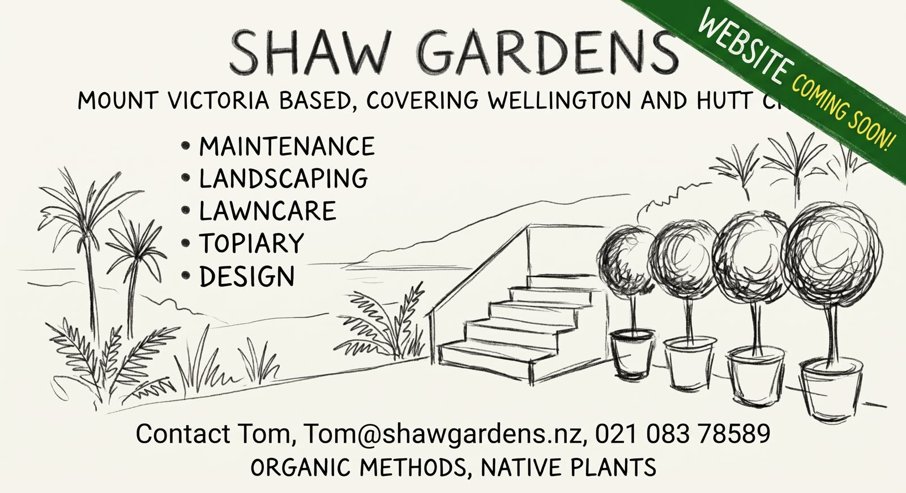

Shaw Gardens
Mount Victoria based, covering Wellington and Hutt Cities

- Maintenance
- Landscaping
- Lawncare
- Topiary
- Design
Organic methods, native plants
Talk to Tom about a garden in Wellington or Hutt Cities.
Mount Victoria based, covering Wellington and Hutt Cities

Organic methods, native plants
Talk to Tom about a garden in Wellington or Hutt Cities.
Mount Victoria based, covering Wellington and Hutt Cities

Organic methods, native plants
Five kinds of garden work, for Wellington and Hutt Cities.
Ongoing care of a garden already in the ground: weeding, pruning, clearing, and keeping beds in order through the seasons. The work uses organic methods.
Laying out and planting a garden: beds, edges, and the plants that fill them, including native plants.
Mowing, edging, and the regular care of lawns, done with organic methods.
Clipping and looking after plants trained into a clear shape, such as hedges and rounded forms.
Planning where a garden sits and what is planted in it. Organic methods and native plants guide the choices.
No projects yet.
Shaw Gardens is based in Mount Victoria and covers Wellington and Hutt Cities.
The work is maintenance, landscaping, lawncare, topiary, and design. Methods are organic, and the planting favours native plants.
Talk to Tom about a garden.
For garden work in Wellington and Hutt Cities, contact Tom.